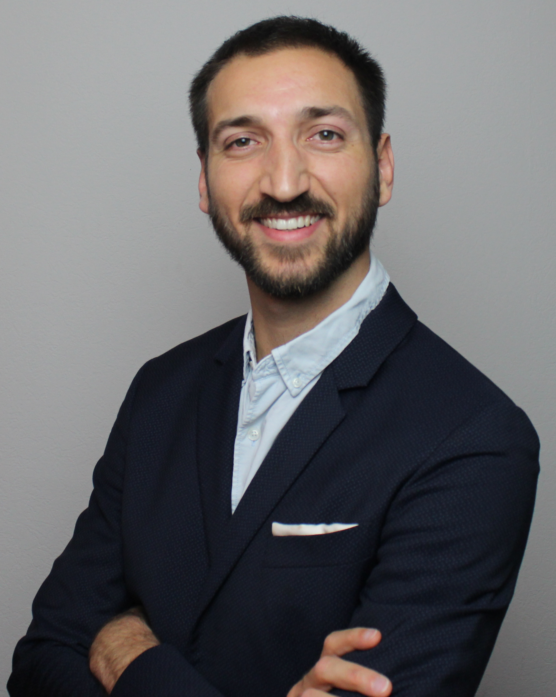

Department of Electrical Electronic and computer Engineering (DIEEI) - University of Catania
I received an M.Sc. degree in automation engineering and control of complex systems from the University of Catania, Catania (Italy) in 2017.
In 2022, I received a Ph.D. in robotics from the National Institute for Applied Sciences, Toulouse, France. I was a Postdoctoral Researcher at LAAS-CNRS, Toulouse, France in 2022.
I am currently an Assistant Professor at the University of Catania, Catania, Italy.
My research focuses primarily on robotics. The most important goal is to create systems capable of engaging in physical interactions with their surroundings by exchanging forces in order to perform complex tasks. This involves numerous obstacles, including robots and environment modeling and control.
In this context, I am also interested in studying multi-robot solutions. Some tasks involving physical interaction are too complicated for a single robot to handle. I'm interested in exploring the challenges associated with group robot coordination in the areas of modeling, control, stability analysis, motion planning, and vision.
Keywords: aerial robotics, aerial physical interaction, tethered aerial vehicles, aerial manipulators, cooperative aerial manipulation, hybrid position-force control, brain-computer interface
Email: dario.sanalitro@unict.it
Office: Building 13, Complex Systems Lab
Address: University of Catania, Catania, Italy